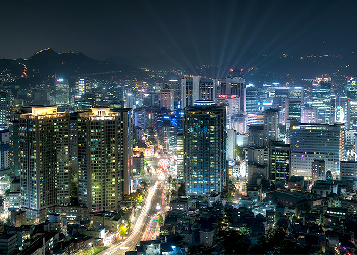

SEOUL
Seoul, South Korea is a vibrant and exciting city, one that deftly combines ancient history with ultra-modern design and technology. The city is filled with a wide range of tourist attractions of all types, from outdoor adventures like exploring Mount Namsan and its surrounding park to indoor fun like visiting one of Seoul's many museums.Seoul is also a city of palaces, with five huge palace complexes located throughout the city and now restored to their former glory. It's also known for its food, with a mouthwatering array of street food, Korean specialties like barbecue, and fine-dining options.